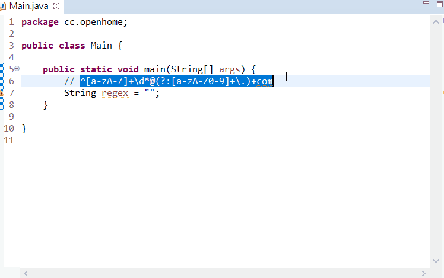

Java 字串與規則表示式
July 2, 2022Java 沒有為規則表示式制定專用的實字（Literal）撰寫方式，在 Java 中撰寫規則表示式，實際上是蠻麻煩的。
字串裡的規則表示式
若有個 Java 字串是 "Justin+Monica+Irene"， 想使用 split 方法依 + 切割，要使用的規則表示式是 \+，要將 \+ 放至 "" 之間時，按照 Java 字串的規定，必須轉義 \+ 的 \，所以必須撰寫為 "\\+"。
jshell> "Justin+Monica+Irene".split("\\+");
$1 ==> String[3] { "Justin", "Monica", "Irene" }
類似地，如果有個 Java 字串是 "Justin||Monica||Irene"，想使用 split 方法依 || 切割，要使用的規則表示式是 \|\|，要將 \|\| 放至 "" 之間時，按照 Java 字串規定必須忽略 \| 的 \，就必須撰寫為 "\\|\\|"。例如：
jshell> "Justin||Monica||Irene".split("\\|\\|");
$2 ==> String[3] { "Justin", "Monica", "Irene" }
如果有個字串是 "Justin\\Monica\\Irene"，也就是原始文字是 Justin\Monica\Irene 以 Java 字串表示，若想使用 split 方法依 \ 切割，要使用的規則表示式是 \\，那就得如下撰寫：
jshell> "Justin\\Monica\\Irene".split("\\\\");
$3 ==> String[3] { "Justin", "Monica", "Irene" }
quote 與 quoteReplacement
這麼撰寫當然非常的麻煩，java.util.regex.Pattern 提供了 quote 靜態方法，可以幫你對規則表示式的詮譯字元進行轉義：
jshell> import static java.util.regex.Pattern.quote;
jshell> "Justin+Monica+Irene".split(quote("+"));
$4 ==> String[3] { "Justin", "Monica", "Irene" }
jshell> "Justin||Monica||Irene".split(quote("||"));
$5 ==> String[3] { "Justin", "Monica", "Irene" }
jshell> "Justin\\Monica\\Irene".split(quote("\\"));
$6 ==> String[3] { "Justin", "Monica", "Irene" }
quote 方法實際上會在指定的字串前後加上 \Q 與 \E，這個表示法在 Java 中用來表示 \Q 與 \E 之間的全部字元，都不當成詮譯字元。
jshell> Pattern.quote(".");
$7 ==> "\\Q.\\E"
相對地，如果想要取代字串，打算使用 $ 之類的符號，也必須進行轉義：
jshell> "java.exe".replaceFirst(quote("."), "\\$");
$8 ==> "java$exe"
因為 $ 用來作為分組參考的前置字元，如果不轉義的話會發生例外：
jshell> "java.exe".replaceFirst(quote("."), "$");
| Exception java.lang.IllegalArgumentException: Illegal group reference: group index is missing
| at Matcher.appendExpandedReplacement (Matcher.java:1030)
| at Matcher.appendReplacement (Matcher.java:998)
| at Matcher.replaceFirst (Matcher.java:1408)
| at String.replaceFirst (String.java:2081)
|
對於這類情況，可以使用 java.util.regex.Matcher 提供的 quoteReplacement 靜態方法：
jshell> import static java.util.regex.Matcher.quoteReplacement;
jshell> "java.exe".replaceFirst(quote("."), quoteReplacement("$"));
$9 ==> "java$exe
不過，遇到 \d、\s 等預定義字元類，也只能乖乖轉義了，所幸，現代 IDE 將文字貼到 "" 裏頭時，會自動為 \ 加上轉義。例如：

這些方式搭配一下，在 Java 中撰寫規則表示式時，應該就可以省不少功夫吧！…XD
String 上可以使用規則表示式的方法，在方才已經看過 split 與 replaceFirst，另外還有 replaceAll 方法，例如，來使用〈分組捕捉〉中談過的 Lookahead，比對名稱最後必須有 " Lin"：
jshell> "Justin Lin, Monica Huang".replaceAll("\\w+(?= Lin)", "Irene");
$1 ==> " Irene Lin, Monica Huang "
符合的文字將被第二個引數取代；\w+ 比對 ASCII 文字，然而附加了 (?= Lin) 表示文字後必須跟隨一個空格與 Lin，字串 "Justin Lin" 的 "Justin" 部份符合，因此被取代為 "Irene" 了。
注意到 replace 方法，是不支援規則表示式的：
String replace(char oldChar, char newChar)
matches 方法用來測試全字串是否符合規則表示式：
jshell> "0970-168168".matches("\\d{4}-\\d{6}");
$10 ==> true
jshell> "Phone: 0970-168168".matches("\\d{4}-\\d{6}");
$11 ==> false
分組命名
在〈分組捕捉〉中談過分組命名，Java 裡可以使用 (?<name>…) 來為分組命名，在同一個規則表示式中使用 \k<name> 取用分組，〈分組捕捉〉談過的 (\d\d)\1，在 Java 中若要採用分組命名，與 Expresso 相同，可以使用 (?<tens>\d\d)\k<tens>，當分組眾多時，適時為分組命名，就不用為了分組計數而煩惱了。
特性類
在 Java 中，可以透過 \p 表示比對的字元具備某特性（Properties），而 \P 表示不具備某特性。例如，如果想要比對小寫字母的話，基本方式是使用字元類 [a-z]，然而，Java 的規則表示式方言中，對於那些 Character.isLowerCase 測試結果會是 true 的字元，可以使用 \p{javaLowerCase}：
jshell> "a".matches("\\p{javaLowerCase}");
$1 ==> true
jshell> "A".matches("\\p{javaLowerCase}");
$2 ==> false
這些方言稱為 java.lang.Character 類，目前有四個：
\p{javaLowerCase}：對應於Character.isLowerCase測試結果\p{javaUpperCase}：對應於Character.isUpperCase測試結果\p{javaWhitespace}：對應於Character.isWhitespace測試結果\p{javaMirrored}：對應於Character.isMirrored測試結果
如果你在意撰寫的規則表示式，未來是否易於轉換至其他場合中使用或被閱讀，使用這些方言當然是不建議的，Java 也支援 POSIX 方括號表示式的字元類，不過是以 \p 表示，例如測試小寫字母：
jshell> "A".matches("\\p{Lower}");
$3 ==> false
jshell> "a".matches("\\p{Lower}");
$4 ==> true
Java 中可用的 POSIX 字元類有：
\p{Lower}：小寫字母[a-z]\p{Upper}：大寫字母[A-Z]\p{ASCII}：全部的 ASCII[\x00-\x7F]\p{Alpha}：字母[\p{Lower}\p{Upper}]\p{Digit}：十進位數字[0-9]\p{Alnum}：字母與數字[\p{Alpha}\p{Digit}]\p{Punct}：標點符號 !"#$%&’()*+,-./:;<=>?@[]^_`{|}~\p{Graph}：可見字元[\p{Alnum}\p{Punct}]\p{Print}：可列印字元[\p{Graph}\x20]\p{Blank}：空白或 Tab[ \t]\p{Cntrl}：控制字元[\x00-\x1F\x7F]\p{XDigit}：十六進位數字[0-9a-fA-F]\p{Space}：全部空白字元[ \t\n\x0B\f\r]